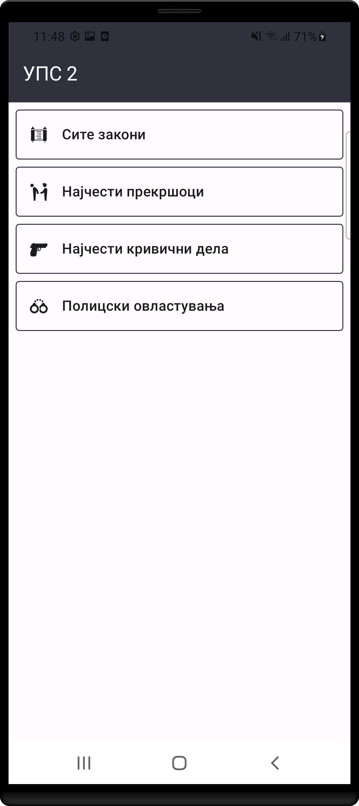
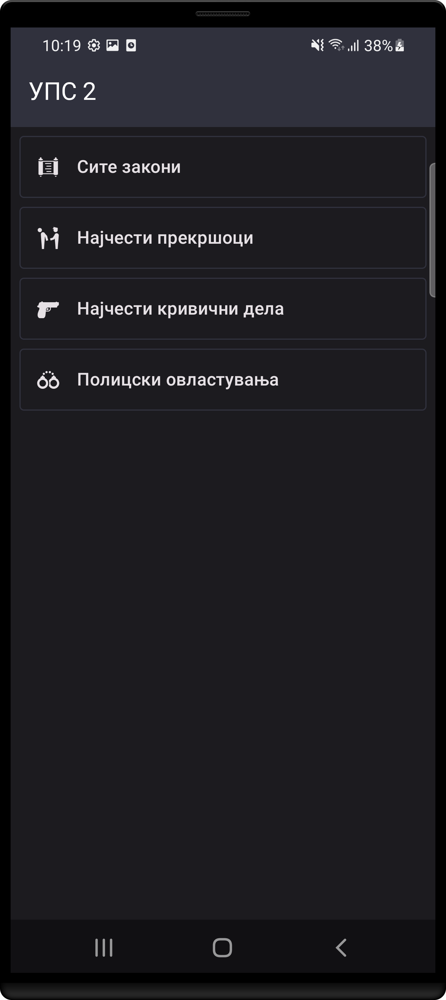
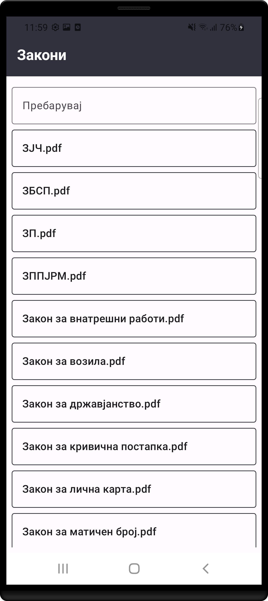

УПС
2
Наследник на првата “УПС закони” апликација наменета за униформирани полициски службеници и спроведувачи на законот. Ова е прва верзија на УПС 2 со основни функционалности. Во план се нови надградувања.
Брза скрол функција во пдф документот
Не е потребна интернет конекција
Светла и темна тема
 
